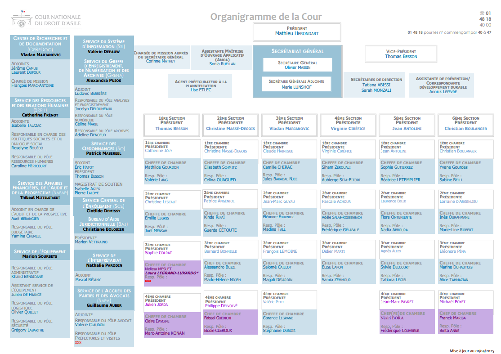

À propos de moi
C'est Alberto et bienvenue sur mon Portfolio.
Actuellement étudiant en BTS SIO option SISR, je me spécialise dans l’administration des systèmes et réseaux, avec un intérêt particulier pour la cybersécurité et l’intelligence artificielle. Rigoureux et engagé, je développe mes compétences à la fois au travers de ma formation et de projets personnels, afin de les mettre en pratique dans un cadre professionnel.
Mon objectif est de concevoir et sécuriser des infrastructures fiables, tout en anticipant les menaces et en optimisant les performances. Je m’intéresse également aux enjeux liés à la cybersécurité et à l’IA, domaines stratégiques en pleine évolution.
Je suis prêt à mettre mes compétences au service de vos projets. Vous trouverez sur ce site mon parcours, mes réalisations et mes coordonnées.
4
Années
d'expérience
8
Clients/Tuteurs
satisfaits
29
Projets
réalisés
BTS SIO option SISR
Le BTS Services Informatiques aux Organisations (SIO) est un diplôme bac+2 qui forme des spécialistes de l’informatique. L’option SISR (Solutions d’Infrastructure, Systèmes et Réseaux) prépare aux métiers liés à :
- L’administration et la sécurisation des réseaux informatiques
- L’installation et la gestion des serveurs
- La supervision et la maintenance d’infrastructures
- Le support technique aux utilisateurs
Les diplômés peuvent exercer comme technicien systèmes et réseaux, administrateur, gestionnaire de parc ou encore consultant en cybersécurité junior. Cette formation est idéale pour ceux qui souhaitent construire, maintenir et sécuriser des infrastructures informatiques modernes.
Compétences
HTML/CCS/JAVASCRIPT
80%
Sécurité Informatique
60%
Réseaux (TCP/IP, DHCP, DNS)
75%
Virtualisation (VMware, VirtualBox)
65%
Administration Systèmes (Windows/Linux)
70%
Bash / PowerShell
60%
Expérience Professionnelle
Technicien Support IT (Stage)
Cour nationale du droit d'asile – Montreuil | 05/2025- Gestion de tickets GLPI
- Installation & configuration postes Windows 11
- Transfert complet de données utilisateurs
- Masterisation & reconditionnement (+150 PC)
- Gestion des droits d’accès & cartes sécurisées

Gestion de contenu Web (Stage)
Établissement Lefèvre – Paris | 01/2024- Création & mise en ligne d’articles WordPress
- Configuration & optimisation de contenus
- Collaboration directe avec un webmaster

Technicien bâtiment & électricité (Stage)
Clim Energy System – Bois-Colombes | 07/2023- Maintenance & sécurité électrique
- Optimisation consommation énergétique
- Installation & entretien d’équipements

Développeur junior (Stage)
Zemus – Le Kremlin-Bicêtre | 03/2023- Développement d’une application
- Contribution à un moteur de recherche
- Travail en équipe Agile
Certifications

Services
Développement Web
Création de sites web responsives avec HTML, CSS, JavaScript et WordPress. Intégration de fonctionnalités dynamiques et optimisation de l’interface utilisateur.
Administration Réseau
Configuration et gestion des réseaux informatiques, adressage IP, VLAN, sécurité réseau et dépannage des connexions.
Gestion de Serveurs
Installation, configuration et supervision de serveurs Windows et Linux. Mise en place d’Active Directory, de GPO et de services réseau.
Support Informatique
Assistance aux utilisateurs, résolution de pannes, maintenance préventive et curative des postes de travail, déploiement de logiciels.
Portfolio
- Tous
- Zemus
- Cour nationale du droit d'asile
- Etablissement Lefèvre
- Clim Energy System
- Projet


💻 Stage – Zemus (Développement Web & Mobile)
Stage réalisé au sein de Zemus, orienté développement web, design d’interfaces et internationalisation d’applications. Participation active à des projets concrets en environnement professionnel.
🛠️ Missions principales
- Intégration et amélioration des pages d’accueil et de connexion du site Zemus.
- Participation à la traduction multilingue du code (localisation du site, dont traduction en russe).
- Conception de maquettes mobiles (versions gratuite & premium) sous Adobe Illustrator.
- Respect et application de la charte graphique web.
📱 Projet académique – WikiWay
- Développement d’une application web & mobile d’estimation immobilière.
- Technologies utilisées : Angular / Ionic (front-end) et Spring Boot (back-end).
- Réalisation de diagrammes de cas d’utilisation et d’un schéma de base de données.
- Participation au déploiement de l’application sur serveur.


🧰 Outils & technologies
🎯 Compétences développées

⚖️ Stage – Cour Nationale du Droit d’Asile (CNDA)
🏛️ Présentation de la CNDA
La Cour nationale du droit d’asile (CNDA) est une juridiction administrative spécialisée, créée en 2007 pour succéder à la Commission des recours des réfugiés. Elle statue sur les recours formés par les demandeurs d’asile contre les décisions de l’Office français de protection des réfugiés et des apatrides (OFPRA).
En tant qu’acteur majeur du droit d’asile en France, la CNDA évolue dans un environnement nécessitant un très haut niveau de sécurité, de confidentialité et de disponibilité des systèmes d’information.
📊 Organigramme de la CNDA
L’organigramme ci-dessous présente l’organisation interne de la Cour nationale du droit d’asile.

💻 Présentation du Service du Système d’Information (SSI)
Le Service du Système d’Information (SSI) de la CNDA est un service informatique atypique pour une juridiction administrative. En plus de ses missions traditionnelles de support, il joue un rôle central dans la gestion de projets informatiques.
Le système d’information de la CNDA se distingue de celui des autres juridictions par l’utilisation de nombreuses applications métier spécifiques, développées pour répondre aux besoins propres de la cour.
🎯 Missions principales du SSI
- Assistance à maîtrise d’ouvrage (AMOA) : recueil et analyse des besoins, rédaction de spécifications fonctionnelles, recettes applicatives, accompagnement du changement (formation, documentation, communication).
- Maintien en conditions opérationnelles et évolutions des applications métier.
-
Support utilisateurs de proximité et gestion du parc informatique :
- Environ 600 postes utilisateurs
- 400 lignes téléphoniques fixes et 20 mobiles
- Trois sites distincts
- Maintien en conditions opérationnelles de l’infrastructure (réseau, serveurs, téléphonie).
🔗 Coopération interservices
Le SSI travaille en étroite collaboration avec les services du Conseil d’État et de l’OFPRA. Le recensement et le suivi des besoins sont réalisés avec l’aide du pôle « informatique et nouvelles technologies », composé de représentants de l’ensemble des métiers de la juridiction.
🚀 Projets et réalisations majeures
- Généralisation de la communication dématérialisée via CNDém@t.
- Extension du système de vidéo-audiences (Martinique et Guadeloupe) et automatisation des convocations.
- Adaptation des outils informatiques suite à la réforme du droit d’asile de 2015.
- Mise en place d’un système de messagerie instantanée entre salles d’audience et interprètes.
🛠️ Gestion et maintenance
- Extension du réseau et déménagement des équipements informatiques.
- Préparation de la migration du serveur de partage de fichiers.
- Migration de flux de données entre les applications CNDA et OFPRA.
- Traitement de plus de 4 300 incidents et demandes utilisateurs.
🛠️ Missions réalisées durant le stage
🔐 Effacement sécurisé des données – Blancco Drive Eraser


Dans le cadre du renouvellement du parc informatique de la CNDA, Blancco Drive Eraser a été utilisé afin de garantir un effacement sécurisé, certifié et irréversible des données présentes sur les disques HDD et SSD, conformément aux exigences de sécurité du service.
🟢 Phase 1 : Préparation
- Sélection manuelle du poste ou du disque à effacer
- Détection automatique du matériel
- Saisie des champs administratifs (juridiction, technicien, etc.)
- Choix de la méthode d’effacement (NIST Purge, ATA)
- Lancement de la procédure d’effacement
🔵 Phase 2 : Exécution & Rapport
- Suivi en temps réel de la progression (ex : 82 %, 6 minutes restantes)
- Validation de la fin de l’effacement
- Génération automatique du rapport d’effacement
- Envoi du rapport vers le serveur central
- Export possible au format PDF avec code-barres
🧠 Points clés
- Effacement conforme aux normes de sécurité internationales
- Processus traçable et auditable via rapports détaillés
- Gestion centralisée par juridiction (ex : CNDA)
- Identification précise des techniciens et des opérations réalisées
- Masterisation de plus de 150 postes (PC de 2015 à 2020) dans le cadre du renouvellement du parc.
- Création de clés USB bootables (Rufus) et utilisation de Blancco pour l’effacement sécurisé des données.
- Installation et mise à jour de Windows 11, diagnostic des problèmes de compatibilité.
- Gestion complète des postes utilisateurs : installation, configuration, migration de données et mises à jour.
🧰 Outils utilisés
🎯 Compétences développées

🏫 Stage – Établissement Lefèvre
Stage réalisé au sein de l’Établissement Lefèvre, axé sur la gestion et l’actualisation du site web via le CMS WordPress.
🛠️ Missions réalisées
- Création, modification et publication de contenus web.
- Configuration des pages, menus et médias sous WordPress.
- Respect de la charte graphique et de la cohérence visuelle.
- Optimisation de la lisibilité et de l’accessibilité des contenus.
🧰 Outils utilisés
🎯 Compétences développées


❄️ Stage – Clim Energy System
Stage réalisé au sein de Clim Energy System, spécialisé dans la gestion technique du bâtiment (GTB) et la supervision des installations de climatisation.
🛠️ Missions réalisées
- Supervision des installations via une station GTB (visualisation des équipements et états).
- Suivi et gestion des alarmes en temps réel, identification des anomalies et validation des incidents résolus.
- Paramétrage et dépannage des systèmes de climatisation depuis le poste de contrôle.
- Interventions sur site : diagnostic et maintenance via connexion directe aux équipements (RJ45).
🎯 Compétences développées
🖥️ Projet – Suivi de stage (Semaine 1 à 3)

Mise en place d’un environnement complet de gestion de parc informatique à l’aide de GLPI et OCS Inventory sur une machine virtuelle Linux (Debian / Ubuntu).
📅 Avancement du projet
- Semaine 1 : Installation de GLPI, tentative d’intégration d’OCS Inventory, ajout d’un poste client et génération d’un rapport d’inventaire.
- Semaine 2 : Création d’un réseau virtuel (client – routeur – serveur), diagnostics réseau (ping, tracert, Wireshark) et gestion d’incidents via GLPI.
- Semaine 3 : Déploiement des services DHCP et DNS avec validation du bon fonctionnement côté client.
⚠️ Problème rencontré
Incompatibilité entre GLPI 10.x et le plugin OCSNG 2.12, empêchant la synchronisation automatique des inventaires matériels.
💡 Solution envisagée
Utilisation d’une version compatible OCS Inventory 2.11 ou du connecteur FusionInventory pour une intégration plus stable.
🎯 Compétences démontrées
🌐 Projet réseau : Architecture multi-VLAN avancée


📊 Plan d'adressage
| VLAN | Nom | Réseau | Passerelle |
|---|---|---|---|
| 10 | DEV | 192.168.10.0/24 | 192.168.10.254 |
| 20 | INFO | 192.168.20.0/24 | 192.168.20.254 |
| 30 | AD | 192.168.30.0/24 | 192.168.30.254 |
| 40 | WEB | 192.168.40.0/24 | 192.168.40.254 |
🔧 Topologie et rôles
- R1 (Routeur) : Routage-on-a-stick (VLAN 10/20) + DHCP relay
- Switch L3 (3560) : Routage inter-VLAN (30/40) + passerelle serveurs
- Switchs d'accès (2960) : Répartition VLANs + trunks
- DC1 : Serveur AD/DNS/DHCP (192.168.30.10)
- Serveur WEB : Apache sur Debian / Cockpit
⚙️ Configurations clés
# Routeur R1
interface g0/0/1.10
encapsulation dot1Q 10
ip address 192.168.10.254 255.255.255.0
ip helper-address 192.168.30.10
# Switch L3
ip routing
interface vlan 30
ip address 192.168.30.254 255.255.255.0
# DHCP pools (DC1)
VLAN10 : 192.168.10.100-200 → GW 192.168.10.254
🧪 Tests validés
🎯 Compétences démontrées
📧 Projet – Mise en œuvre d’un serveur de messagerie sous Debian 13


{kind=link}
{kind=link}
{kind=link}
{kind=link}
{kind=link}
{kind=link}
{kind=link}
{kind=link}
{kind=link}
{kind=link}
{kind=link}
{kind=link}
{kind=link}
Déploiement complet d’un serveur de messagerie professionnel sous Debian 13, incluant l’envoi et la réception de mails, le chiffrement TLS et le filtrage antispam.
📅 Étapes du projet
-
Étape 1 :
Installation et configuration de Postfix (SMTP) en mode “Internet Site”
avec le nom de domaine
mail.tp.local. - Étape 2 : Déploiement de Dovecot pour l’accès IMAP/IMAPS et configuration du stockage des mails en Maildir.
-
Étape 3 :
Création de comptes utilisateurs Linux (
alice,bob) pour l’authentification des boîtes mail. - Étape 4 : Sécurisation des échanges avec TLS via un certificat auto-signé et activation du chiffrement côté SMTP et IMAP.
- Étape 5 : Intégration de SpamAssassin pour le filtrage antispam et configuration de Postfix pour rediriger les mails vers le filtre.
⚠️ Problème rencontré
Difficulté à faire fonctionner la redirection des mails vers SpamAssassin
via content_filter dans Postfix sans bloquer la réception.
💡 Solution appliquée
Modification du fichier /etc/postfix/master.cf pour ajouter un service
spamassassin en mode “pipe” et rediriger uniquement les mails entrants
vers le filtre, sans affecter l’envoi.
🎯 Compétences démontrées
Veille Technologique
IA générative appliquée à la sécurité informatique
La veille technologique permet d’anticiper les évolutions du secteur numérique. Dans mon cas, je me concentre sur l’impact de l’IA générative en cybersécurité : un domaine en pleine mutation où les menaces et opportunités évoluent très rapidement.
🎯 Objectifs de la veille
- Anticiper les changements : détecter les technologies émergentes, innovations et évolutions législatives. (Sources : École de Guerre Économique, Wikipédia)
- Innover : s’inspirer de pratiques existantes pour améliorer ses propres services. (Source : Appvizer)
- Rester compétitif : suivre les concurrents et comprendre leurs atouts technologiques. (Source : Wikipédia)
- Prendre de meilleures décisions : orienter la stratégie, les investissements et la R&D grâce aux informations récoltées. (Source : École de Guerre Économique)
🔍 Étapes de la veille
- Définir le périmètre : cibler l’IA générative appliquée à la cybersécurité (ex. phishing, SOC automatisés). (Appvizer)
- Collecte d’informations : articles, brevets, blogs spécialisés, conférences (Black Hat, DefCon, FIC). (Wikipédia, CNRST, EGE)
- Tri et filtrage : conserver uniquement les données fiables et pertinentes. (Wikipédia)
- Analyse : identifier tendances, signaux faibles (attaques par IA), signaux forts (solutions EDR/XDR avec IA). (Wikipédia)
- Diffusion : rédaction de rapports et notes de synthèse pour décideurs. (Wikipédia)
- Mise à jour continue : ajustement régulier du périmètre et des sources pour rester à jour.
📌 Exemple concret
Un exemple marquant est la montée des attaques de phishing générées par IA, qui deviennent de plus en plus crédibles et difficiles à détecter. En parallèle, de grands acteurs de la cybersécurité (Palo Alto, Darktrace, CrowdStrike) développent des solutions intégrant l’IA générative pour automatiser la détection et la réponse aux incidents.
Sources :
- École de Guerre Économique : www.ewg.fr
- Wikipédia : www.wikipedia.org
- Appvizer : www.appvizer.fr